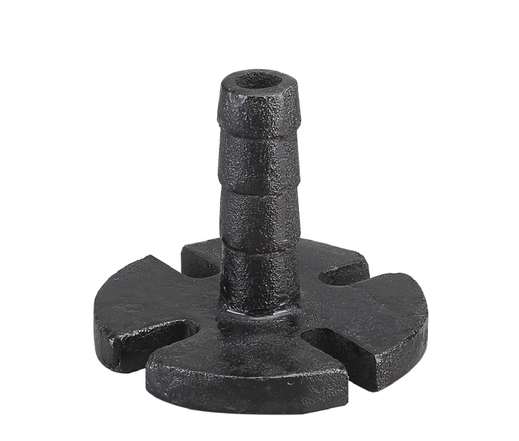
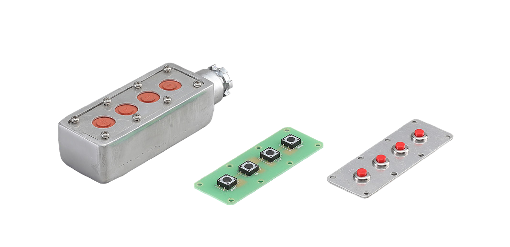
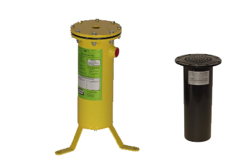

블라스트 부품 / 예비부품
예비부품 Spare Parts
에어 블라스트 설비 및 각종 밸브의 유지보수에 필요한 소모품·예비부품 일체를 개별 공급합니다.





주요 취급 예비부품 Available Spare Parts
- 그리트밸브 티 · 콘 (Grit Valve TEE & CONE): 열처리 내마모 티(40A-40A, 40A-32A, 32A-32A, 25A-25A, 20A) 및 내마모성 연질 합성고무(BR) 콘(에어밸브 32A·40A 공용).
- 필러밸브 콘 (Filler Valve CONE): 블라스트 탱크 내부 연마재 유입 제어용 연질고무 콘 (실린더용 Ø190 · 범용 Ø145).
- 핀치러버 (Pinch Rubber / 슬리브): 요코하마(Yokohama) 고무 슬리브 — APV-25 (길이 200mm), APV-40 (길이 230mm) 외 주문 규격 대응.
- 플랜지 니플 (Flange Nipple): 블라스트 탱크 및 배관 연결용 플랜지 니플.
- 블라스트 리모컨 (Blast Remote Control): 작업자 원격 분사·차단 제어용 공압 리모컨 스위치.
- 에어 브리딩 필터 (Air Breathing Filter): 작업자 호흡용 압축공기 정화 필터.
- 버터플라이밸브 (Butterfly Valve): 블라스트·집진 라인 배관 개폐용 버터플라이밸브.
견적·규격 문의 051-319-2332 · daehatw@daum.net